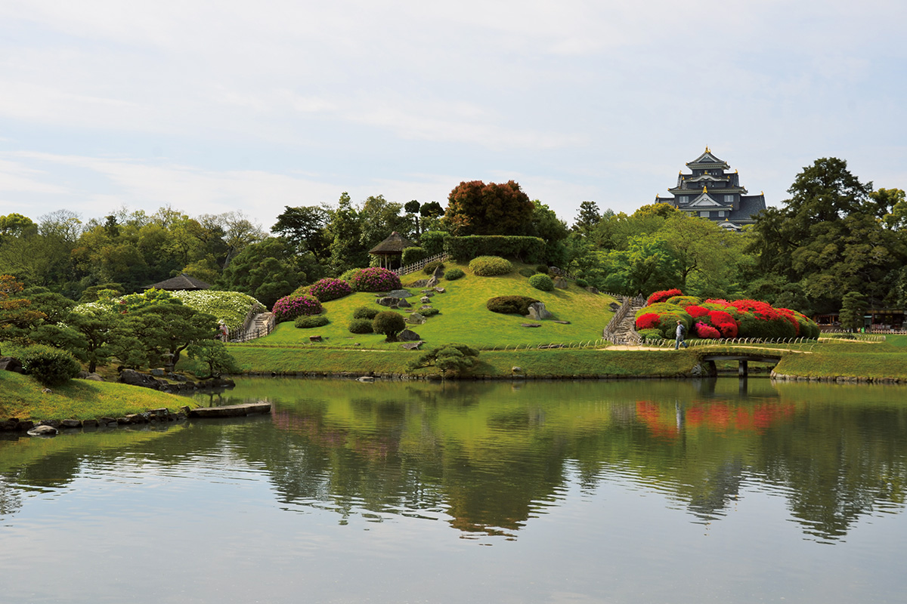

Префектура Окаяма · город Окаяма · сады и замки
Сад Коракуэн и замок Окаяма: триста лет на берегу реки

Один из трёх знаменитых садов Японии занимает берег реки в двух шагах от замка Окаяма. Сад заложили больше трёхсот лет назад как место отдыха для владетельного князя, и с тех пор он остаётся самым спокойным уголком города.
Сад
Триста лет на берегу
Сад Коракуэн появился около трёхсот лет назад: его велел разбить Цунамаса Икэда (1638–1714), второй владетель княжества Окаяма. В центре сада насыпан небольшой холм, у его подножия проложены каналы, а два пруда соединяет выкопанный в форме тыквы водоём. По дорожкам сад обходят по кругу, и вид на воду всё время меняется: здесь нарочно не оставили ни одной прямой линии.
В 1952 году Коракуэн получил статус особо живописного места. Праздники в саду идут круглый год, а трижды за сезон его подсвечивают по вечерам, и тогда сад выглядит совсем иначе, чем днём. На машине удобно заехать по дороге от города: у сада есть своя парковка на 570 мест.
Сад Коракуэн
- Адрес
- префектура Окаяма, город Окаяма, Коракуэн, 1-5
- Телефон
- +81 86-272-1148
- Часы работы
- с 20 марта по 30 сентября 7:30–18:00 (вход до 17:45); с 1 октября по 19 марта 8:00–17:00 (вход до 16:45)
- Выходные
- нет
- Цены
- взрослым 500 иен, от 65 лет 200 иен, старшеклассникам и младше бесплатно; парковка 100 иен за 40 минут
Замок
Каменные стены рядом с садом
Замок Окаяма стоит по соседству с садом, на той же набережной. С дорожек Коракуэн видны его каменные стены, и даже если внутрь не заходить, стоит обойти их по кругу: кладка сложена из крупных блоков и хорошо различима с воды. Билет удобно взять общий, он действует и в саду, и в замке.
Замок Окаяма
- Часы работы
- 9:00–17:30 (вход до 17:00)
- Выходные
- 29–31 декабря
- Цены
- взрослым 500 иен, учащимся средней школы и младше бесплатно; общий билет в замок и сад Коракуэн 800 иен